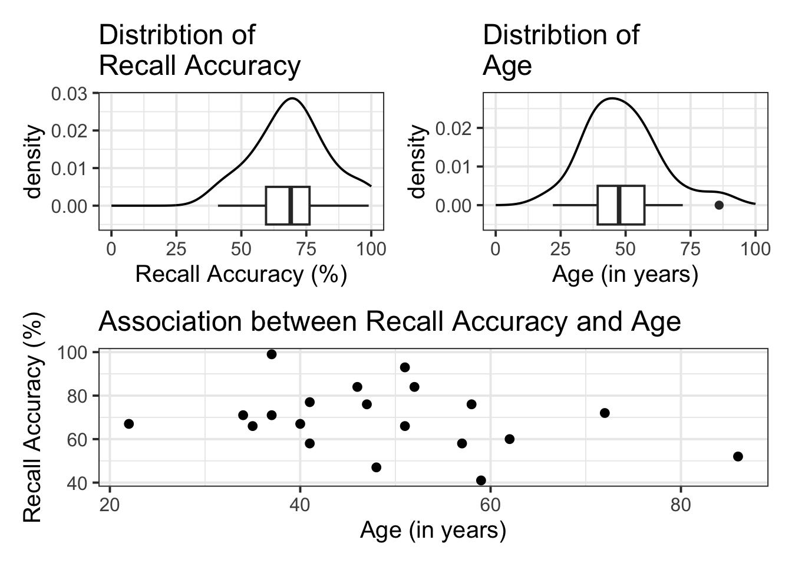
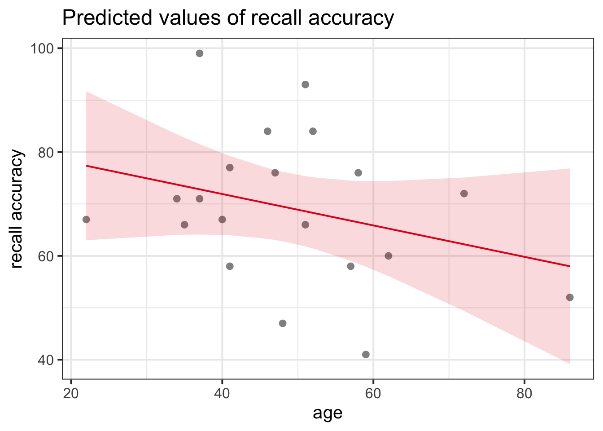

model_name <- lm(DV ~ IV, data = data_name) Simple regression (one predictor)
Description and specification
The association between two variables (e.g., recall accuracy and age) will show deviations from the ‘average pattern’. Hence, we need to create a model that allows for deviations from the linear relationship - we need a statistical model.
A statistical model includes both a deterministic function and a random error term. We typically refer to the outcome (‘dependent’) variable with the letter \(y\) and to our predictor (‘explanatory’/‘independent’) variables with the letter \(x\). A simple (i.e., one x variable only) linear regression model thus takes the following form (where the terms \(\beta_0\) and \(\beta_1\) are numbers specifying where the line going through the data meets the y-axis (i.e., the intercept - where \(x\) = 0; \(\beta_0\)) and its slope (direction and gradient of line; \(\beta_1\)):
Mathematical Model Specification
\[ y_i = \beta_0 + (\beta_1 \cdot x_i) + \epsilon_i \]
$$
y_i = \beta_0 + (\beta_1 \cdot x_i) + \epsilon_i
$$Model Specification: Annotated
\[ y_i = \underbrace{\beta_0 + {(\beta_1 \cdot x_i})}_{\text{function of }x} + \underbrace{\epsilon_i}_{\text{random error}} \quad \text{where} \quad \epsilon_i \sim N(0, \sigma) \text{ independently} \]
$$
y_i = \underbrace{\beta_0 + {(\beta_1 \cdot x_i})}_{\text{function of }x} + \underbrace{\epsilon_i}_{\text{random error}}
\quad \text{where} \quad \epsilon_i \sim N(0, \sigma) \text{ independently}
$$Model Specification: Explained
Let’s break down what this actually means by considering the statement in smaller parts:
\(y_i = \beta_0 + \beta_1 \cdot x_i\)
- \(y_i\) is our measured outcome variable (our DV)
- \(x_i\) is our measured predictor variable (our IV)
- \(\beta_0\) is the model intercept
- \(\beta_1\) is the model slope
- \(y_i\) is our measured outcome variable (our DV)
\(\epsilon \sim N(0, \sigma) \text{ independently}\)
- \(\epsilon\) is the residual error
- \(\sim\) means ‘distributed according to’
- \(N(0, \sigma) \text{ independently}\) means ‘normal distribution with a mean of 0 and a variance of \(\sigma\)’
- Together, we can say that the errors around the line have a mean of zero and constant spread as x varies
- \(\epsilon\) is the residual error
In R
There are basically two pieces of information that we need to pass to the lm() function:
- The formula: The regression formula should be specified in the form
y ~ xwhere \(y\) is the dependent variable (DV) and \(x\) the independent variable (IV). - The data: Specify which dataframe contains the variables specified in the formula.
In R, the syntax of the lm() function can be specified as follows (where DV = dependent variable, IV = independent variable, and data_name = the name of your dataset):
you can also specify as:
model_name <- lm(DV ~ 1 + IV, data = data_name) Example
Imagine that you were tasked to investigate whether there was an association between recall accuracy and age. You have been provided with data from twenty participants who studied passages of text (c500 words long), and were tested a week later. The testing phase presented participants with 100 statements about the text. They had to answer whether each statement was true or false, as well as rate their confidence in each answer (on a sliding scale from 0 to 100). The dataset contains, for each participant, the percentage of items correctly answered, their age (in years), and their average confidence rating.
The data are available at https://uoepsy.github.io/data/recalldata.csv
recalldata <- read_csv('https://uoepsy.github.io/data/recalldata.csv')Research Question
Is there an association between recall accuracy and age?
Visualisation
There are lots of different ways in which we can visualise our data (as per the Visual Exploration flashcards).
For the marginal distributions we will use density and boxplots, and for the bivariate associations a scatterplot.
#save plots to individual objects in order to arrange
plt1 <- ggplot(data = recalldata, aes(x = recall_accuracy)) +
geom_density() +
xlim(0, 100) + #specify x-axis to range from 0-100
geom_boxplot(width = 1/100) +
labs(x = "Recall Accuracy (%)", title = "Distribtion of \nRecall Accuracy")
plt2 <- ggplot(data = recalldata, aes(x = age)) +
geom_density() +
xlim(0, 100) + #specify x-axis to range from 0-100
geom_boxplot(width = 1/100) +
labs(x = "Age (in years)", title = "Distribtion of \nAge")
plt3 <- ggplot(data = recalldata, aes(x = age, y = recall_accuracy)) +
geom_point() +
labs(x = "Age (in years)", y = "Recall Accuracy (%)", title = "Association between Recall Accuracy and Age")
#load patchwork package to arrange plots
library(patchwork)
#arrange plots where there are two plots in to panel (plt1 + plt2), one on bottom (plt3)
(plt1 + plt2) / plt3
- The marginal distribution of recall accuracy was unimodal with a negative skew with a mean of approximately 69.25. There was high variation in recall accuracy (SD = 14.53)
- The marginal distribution of age was unimodal with a mean of approximately 48.8, where age ranged from 22 to 86
- There appeared to be a weak negative association between recall accuracy and age, where older age was associated with lower recall accuracy
Model Specification
\[ \text{Recall Accuracy} = \beta_0 + (\beta_1 \cdot \text{Age}) + \epsilon \]
$$
\text{Recall Accuracy} = \beta_0 + (\beta_1 \cdot \text{Age}) + \epsilon
$$Hypothesis Specification
\(H_0: \beta_1 = 0\)
$H_0: \beta_1 = 0$ There is no association between recall accuracy and age.
\(H_1: \beta_1 \neq 0\)
$H_1: \beta_1 \neq 0$ There is an association between recall accuracy and age.
Model building
To fit the model in R we use the lm() function. The simple linear model is assigned/stored in an object called recall_simp:
recall_simp <- lm(recall_accuracy ~ age, data = recalldata)recall_simp
Call:
lm(formula = recall_accuracy ~ age, data = recalldata)
Coefficients:
(Intercept) age
84.015 -0.303 When we call the name of the fitted model, recall_simp, you can see the estimated regression coefficients \(\hat \beta_0\) and \(\hat \beta_1\). The line of best-fit is thus given by:1
\[ \widehat{\text{Recall Accuracy}} = 84.02 - 0.31 \cdot \text{Age} \]
Alternatively to get these same estimates, we could have used the summary() function:
summary(recall_simp)
Call:
lm(formula = recall_accuracy ~ age, data = recalldata)
Residuals:
Min 1Q Median 3Q Max
-25.16 -7.76 -2.66 9.59 26.18
Coefficients:
Estimate Std. Error t value Pr(>|t|)
(Intercept) 84.015 11.445 7.34 8.2e-07 ***
age -0.303 0.225 -1.34 0.2
---
Signif. codes: 0 '***' 0.001 '**' 0.01 '*' 0.05 '.' 0.1 ' ' 1
Residual standard error: 14.2 on 18 degrees of freedom
Multiple R-squared: 0.0911, Adjusted R-squared: 0.0406
F-statistic: 1.8 on 1 and 18 DF, p-value: 0.196Interpreting results
\(\beta_0\) = (Intercept) = 84.02
- An individual aged 0 years was expected to have a recall accuracy of \(84.02\).
Note: the intercept isn’t very useful here at all. It estimates the accuracy for a newborn (who wouldn’t be able to complete the task!).
\(\beta_1\) = age = -0.3
- Increasing one year in age is associated with a decrease of 0.3% in recall accuracy.
- This change is not significantly different from zero (\(p\) = .20).
Visualising model
We can use the function plot_model() from sjPlot.
plot_model(
recall_simp,
type = "eff",
terms = "age",
show.data = TRUE
)
The line that best fits the association between recall accuracy and age is only able to predict the average accuracy for a given value of age.
This is because there will be a distribution of recall accuracy at each value of age. The line will fit the trend/pattern in the values, but there will be individual-to-individual variability that we must accept around that average pattern.
Footnotes
Yes, the error term is gone. This is because the line of best-fit gives you the prediction of the average recall accuracy for a given age, and not the individual recall accuracy of an individual person, which will almost surely be different from the prediction of the line.↩︎